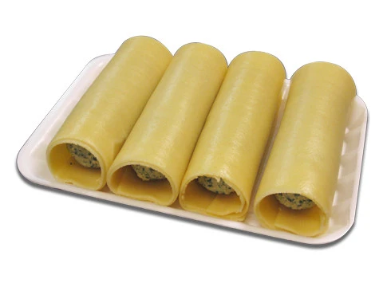
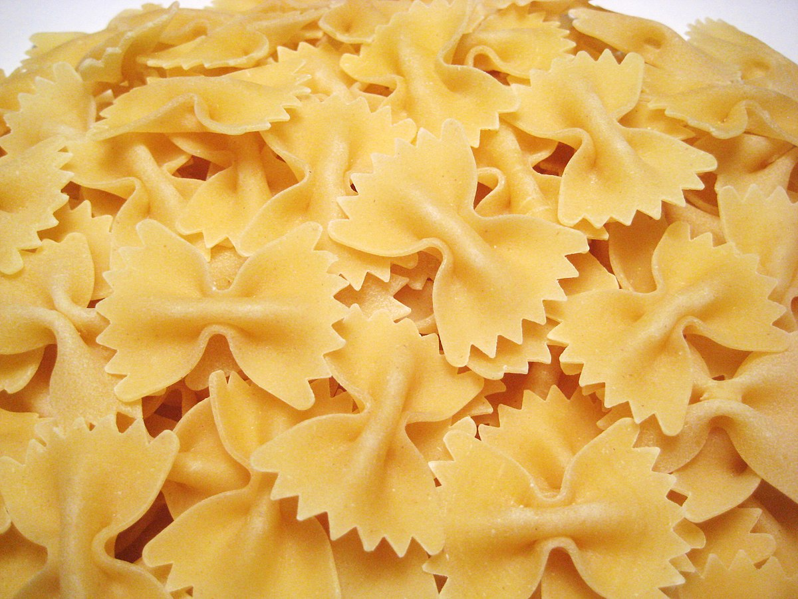
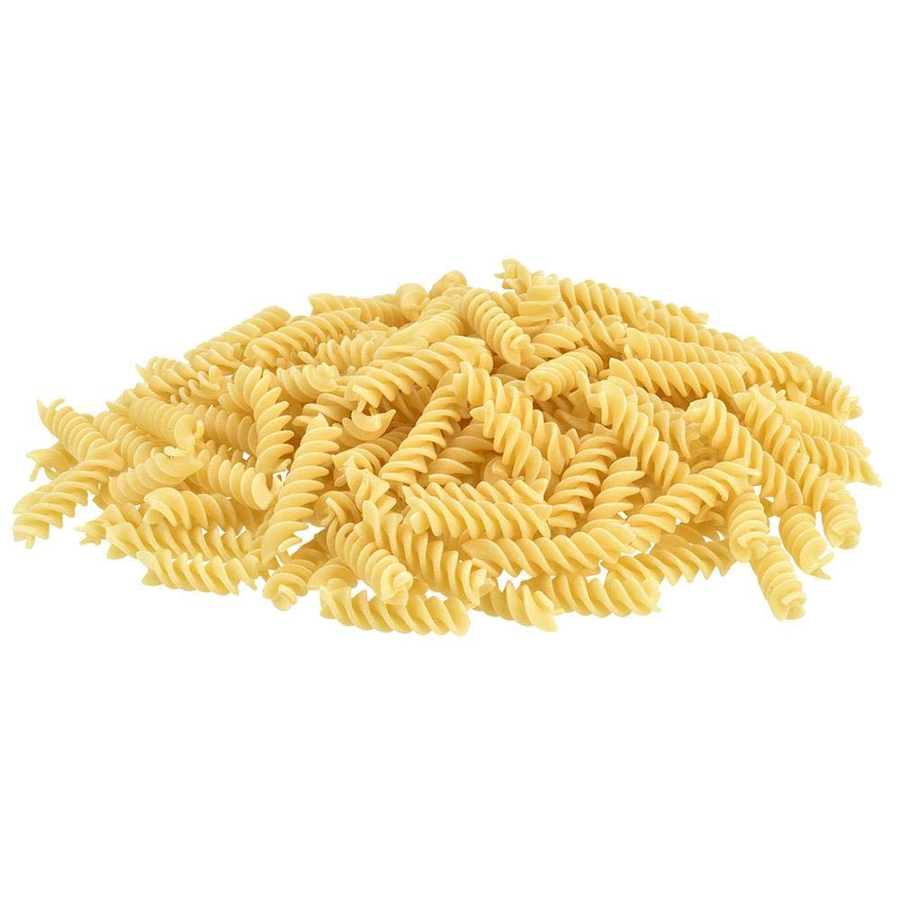
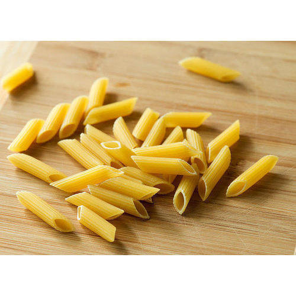
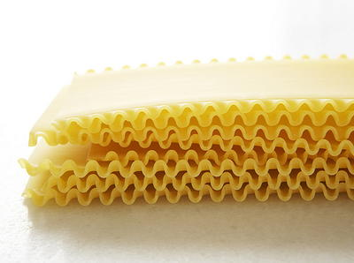
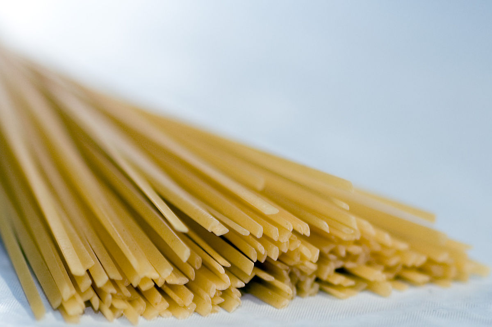
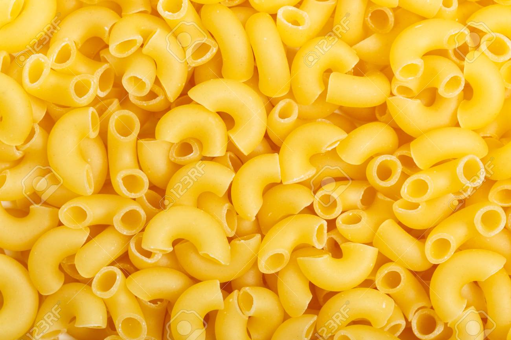
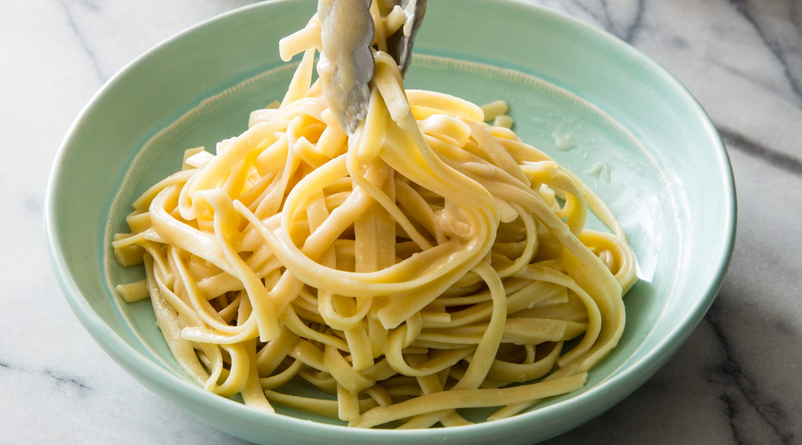

|  |
Cannelloni pastaLarge tubes which are filled with meat and topped with sauce. |
|  |
Farfelle pastaButterflies or bowties,available in different colour made by tomato or spinach. |

|
Conchiglie pastaShells commonly served with an olive oil vegetable sauce. |
|  |
Fussilli pastaTwist shapes that are good for capturing the sauce. |
|  |
Penne pastaQuill shaped pasta often served with a spicy arrabiata sauce. |
|  |
Lasagna pastaSheets of pasta which are layered with meat or other sauces and baked. |
|  |
Linguine pastaLong thin flat strands:the name means small tounge. |
|  |
Macaroni pastaSmall curved often baked in a cheese sauce or,in Italy served with cauliflower. |
|  |
fettuchine pastaRibbons made with added egg.Similar to tagliatelle but thinner |
Farfelle pastaButterflies or bowties,available in different colour made by tomato or spinach. |